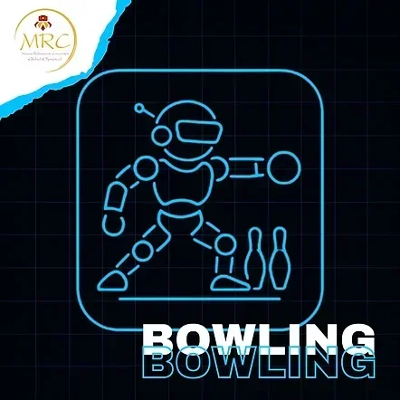
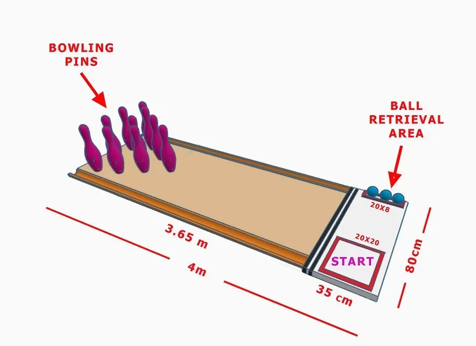
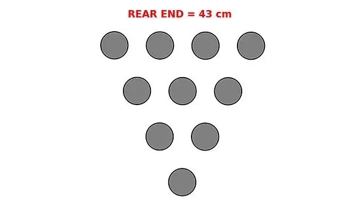

BOWLING (機器人保齡球)
希臘官方原文規則（English）保齡球原始內容
規則內容
保齡球
年齡組別
兒童組 (10至12歲 / 國小)
青少年組 / 青年組 (12歲以上至18歲 / 國中及高中)
⚠️ 本項目僅設一個級別：
所有類型的機器人同場競技。
🚨 各年齡組別分別進行比賽。
⚠️ 第零條規則 – 零容忍原則與常識
在所有運動項目中，均適用第零條規則，其內容如下：
➤「如果您不確定某件事是否被允許，那麼它很可能是不被允許的。」
所有規則皆基於常識、運動精神以及所有參與者的安全。
任何蓄意曲解、違反規則本意，或試圖利用灰色地帶獲取不公平優勢的行為，將不被容忍，並可能導致隊伍被取消比賽資格。
🎯 目標
機器人保齡球的目標是讓機器人以自主方式運作，使用球擊倒球瓶。
獲勝的隊伍是以最少的嘗試次數擊倒最多球瓶的隊伍。
👥 隊伍 – 教練
- 比賽以隊伍為單位參與，而非個人。
- 每隊可由二 (2) 至三 (3) 名隊員組成。
- 每隊必須指定最多一 (1) 名機器人運動員技師。僅允許機器人運動員技師進入準備區或比賽區域。其餘隊員必須留在比賽場地內，但不得排隊等候。➤ 換言之，他們不能佔用額外位置。若隊伍未遵守此規則，將被取消資格。
- 允許隊伍在每次球道嘗試前更換指定的技師，讓所有隊員都有機會積極參與該項目，但此非強制性。
- 所有隊員必須年滿 10 歲 (相當於國小四年級或以上)。
- 隊伍教練必須年滿 20 歲。
- 為確保比賽順利進行，教練每註冊 3 支隊伍參加比賽，就必須配備 1 名助理。
- 每隊僅允許使用一台機器人。比賽期間不得更換機器人。
- 隊伍之間不得共用同一台機器人。
- 若隊伍的機器人遇到嚴重的技術問題，經主裁判許可後，僅允許更換微控制器或電子元件。
🤖 機器人運動員 – 機器人類別
- 本競賽開放給所有機器人運動員，無論使用何種機器人套件或硬體。
- 也允許自製的機器人運動員參賽。
- 所有機器人運動員在各年齡組別中同場競技。
⚙️ 機器人運動員要求 – 規格
- 機器人運動員必須是自主運作的。
- 其最大尺寸必須為 寬 20 公分 x 長 20 公分，且重量不超過 2000 公克。
- 為確認上述規格，機器人運動員將被秤重，並且必須能舒適地放入一個檢測箱中。
➤ 檢測箱尺寸為 (20 x 20) 公分，另有正負 2 毫米的公差。
- 機器人運動員應在不施加壓力的情況下放入檢測箱。
- 機器人運動員必須具備啟動和停止按鈕。
- 機器人運動員必須配備任何類型的感測器，用以偵測線條和球（的顏色）。
- 嚴禁在結構中使用氣動裝置。
- 無論機器人類別，僅允許使用 1 個處理器、6 個馬達和 4 個感測器。
- 在機器人套件類別中，若微控制器的連接埠不支援超過 4 個馬達，則允許使用連接埠擴充元件（例如多工器）。
🧪 技術檢查
- 初次技術檢查於比賽當日，在機器人運動員第一次嘗試時進行。
- 在初次檢查期間，將詢問隊伍關於機器人程式的關鍵部分。➤ 隊伍必須打開裝有機器人程式的筆記型電腦。➤ 若從回答中明顯看出隊伍不理解程式，他們將受到相當於其在該項目中所得分數 -20% 的罰則。
- 技術檢查包括根據上述規格進行的機器人檢查。➤ 若機器人未達要求，將不允許其參賽，並自動取消其在该項目的資格。
- 初次檢查完成後，機器人運動員將被分配一個唯一的 ID 編碼。
- 若隊伍在初次技術檢查時未到場，將導致自動取消比賽資格。
- 在每次嘗試前，助理裁判也會進行二次技術檢查。
🏟️ 競賽場地 – 球道與球瓶
- 球道長度：比賽場地總長度為 4 公尺。
- 寬度：競賽場地寬 80 公分，為球和機器人導航提供足夠空間。
- 保齡球道：場地內一條 3.65 公尺長的木質紋理球道，球必須在此球道上滾向球瓶。球道表面光滑，模擬真實的保齡球道。
- 側邊溝槽：位於球道兩側。若球掉入溝槽，則該次擲球視為無效，不計任何球瓶。
- 取球區：一個 20 公分 × 8 公分的矩形區域，位於起始區側邊，每次嘗試前球將被放置於此。取球區放置在場地地板上。其高度在 1 公分至 2 公分之間。機器人必須自主地從此區域取球。
- 起始區：一個 20 公分 × 20 公分的正方形區域，機器人從此處開始其嘗試。它必須從這裡移動到取球區，取球，然後前往球道。機器人在每次嘗試前都必須從起始區出發。機器人運動員技師可以在每次嘗試後（用手）將機器人取回，並將其放置到起始區以進行下一次嘗試。
- 球瓶：10 個保齡球瓶，按照標準三角形排列 (1–2–3–4)。目標是在每次嘗試中擊倒盡可能多的球瓶。
- 犯規線是在球道起點處，橫跨球道寬度的雙黑線。
🎳 球與球瓶
- 球：使用標準網球。直徑：6.5 – 6.7 公分 重量：56 – 59 公克 材質：橡膠核心，外層覆蓋毛氈。
- 使用標準網球。
- 直徑：6.5 – 6.7 公分
- 重量：56 – 59 公克
- 材質：橡膠核心，外層覆蓋毛氈。
- 球瓶：每條球道配備 10 個保齡球瓶，按照官方規定的三角形排列 (1–2–3–4)。高度：17 公分 底部直徑：37-39 公釐 最大直徑（肩部）：約 63-65 公釐 頸部直徑：約 3 公分 重量：100 公克 ± 15 公克 材質：3D 列印 PLA。標準化：球瓶的官方 3D 模型（STL 檔案）將在比賽網站上提供下載。隊伍必須使用此設計以確保一致性。
- 每條球道配備 10 個保齡球瓶，按照官方規定的三角形排列 (1–2–3–4)。
- 高度：17 公分
- 底部直徑：37-39 公釐
- 最大直徑（肩部）：約 63-65 公釐
- 頸部直徑：約 3 公分
- 重量：100 公克 ± 15 公克
- 材質：3D 列印 PLA。
- 標準化：球瓶的官方 3D 模型（STL 檔案）將在比賽網站上提供下載。隊伍必須使用此設計以確保一致性。
- 球瓶設置：球瓶以三角形排列，頂點為 1 個球瓶，其後每排分別為 2、3 和 4 個球瓶 (1–2–3–4 排列)。三角形尺寸：相鄰球瓶間距：12 公分（中心對中心） 球瓶三角形總深度：36 公分 最後一排（4 個球瓶）總寬度：36 公分 球瓶三角形置於球道末端，居中於球道寬度，並與球道後邊界齊平。
球瓶設置
- 球瓶以三角形排列，頂點為 1 個球瓶，其後每排分別為 2、3 和 4 個球瓶 (1–2–3–4 排列)。
- 三角形尺寸：相鄰球瓶間距：12 公分（中心對中心） 球瓶三角形總深度：36 公分 最後一排（4 個球瓶）總寬度：36 公分
三角形尺寸：
- 相鄰球瓶間距：12 公分（中心對中心）
- 球瓶三角形總深度：36 公分
- 最後一排（4 個球瓶）總寬度：36 公分
- 球瓶三角形置於球道末端，居中於球道寬度，並與球道後邊界齊平。

